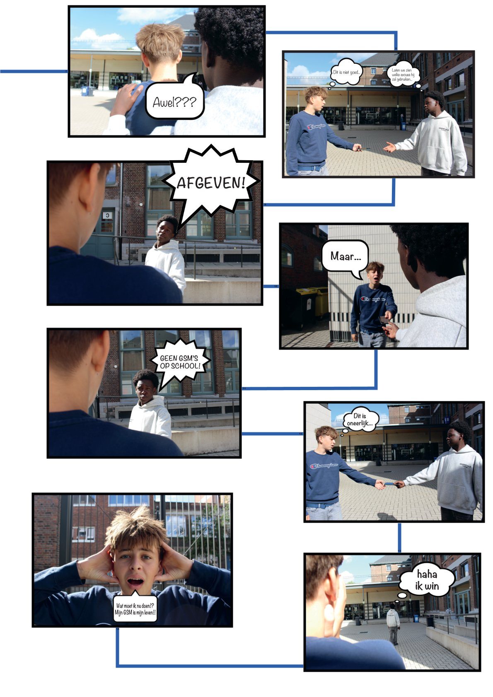

Hier zal u al mijn werken zien van afgelopen schooljaar, voor de clustervak Audiovisueel Atelier (Vooral Premiere Pro)

Stripverhaal-1

Stripverhaal-2
Lego Animatie
Altijd Afgeven
Video verwijderd wegens bestandsgrootte.
Hier zal u al mijn werken zien van afgelopen schooljaar, voor de clustervak Audiovisueel Atelier (Vooral Premiere Pro)

Video verwijderd wegens bestandsgrootte.